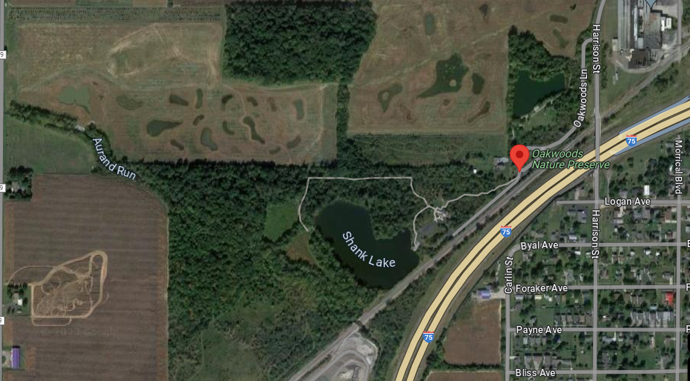

Group6
Mehrdad Yadollahi
Kofi Boadi Nsafoah
Build a Website in D3 to create interactive visualization(s) of specific information based on water and soil samples , collected at several wetlands sites on Oakwood Nature Reserve Wetland, Findlay
Soil and Water mineral content in Oak Nature Reserve collected from the Summer of 2021 to Summer of 2023. Samples collected includes :
Total Phosphorus (TP), Total Nitrogen (TN), Phosphorus contented determined by Mehlich-3 extraction & ICP analysis (m3.P), Iron contented determined by Mehlich-3 extraction & ICP analysis(m3.Fe), Aluminum contented determined by Mehlich-3 extraction & ICP analysis (m3.Al), The Soil Phosphorus Storage Capacity(SPSC), The concentration of phosphorus extracted by water (wEX.P), The concentration of ammonia extracted by water(wEX.NH3), The concentration of nitrate + nitrite extracted by water(wEX.NOx), The soil pH(pH), and The soil electrical conductivity (EC)
> 